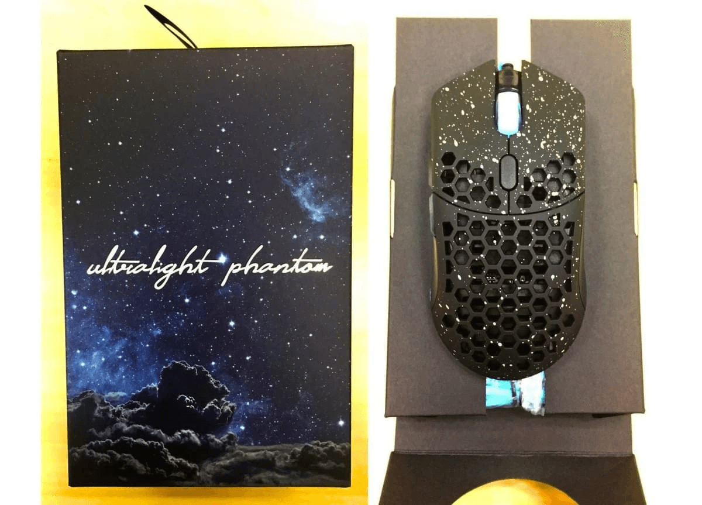
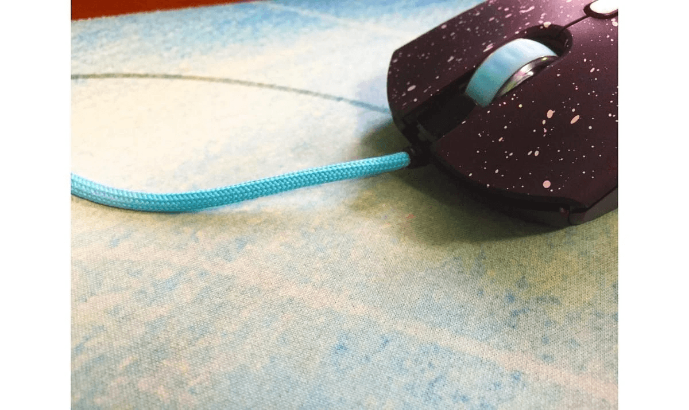

・Finalmouse Ultralight Phantom With Phantomcord レビュー
初めましてPUBG部門に所属しているApple4Gです。
この度スポンサー様である、「ふもっふのおみせ」様からデバイスの提供をして頂いたので、そのデバイスに関するレビューをさせて頂きます。
提供されたデバイスというのは「Finalmouse Ultralight Phantom With Phantomcord」です。

・製品について
専用のドライバーも必要なく真ん中のボタンでDPIを変更する事が可能です。
(400/800/1600/3200 ポーリングレートは500)
補足：ポーリングレートを1000等に変えたい場合はDM1 Prosのドライバーをインストールする事で変える事ができます。
梱包されている箱もとてもオシャレですし、マウス本体にも星屑をイメージさせるペイントがされていてあまり見た事がない装飾が施されているので個人的には気に入っています！
マウス本体にはマット加工＋無数の穴が開けられているので手汗をかきやすい方もかきにくくなっています。自分はかきやすい方ですがこのマウスのお陰でマシになりましたし、多少かいてもマット加工のお陰でベタベタすることもなく気になりません。
このマウスの特性は、なんといっても「非常に軽い」です！
本体の重量はなんと67g！例えるなら単２電池より少し軽いぐらいです。
の究極といえるほどの軽さを実現する為に様々な加工がされているそうです！
よく聞かれるのが、「それだけ軽くするために作られてるなら壊れやすいんじゃない？、脆いんじゃないか？」という質問です。
しかし、実際に使用してみると一般的なマウスと何ら変わらずしっかりと強度は確保されています。強度は保ちつつ重量は非常に軽く作られています。
・特殊加工コード(Phantomcord)
更に今回提供して頂いたFinalmouse Ultralight Phantom With Phantomcord
には名前にも書いてありますが、Phantomcordと呼ばれる特殊な加工を施されたコードが使用されています。

このPhantomcordのなにが凄いのかといいますと有線マウスには、必ずと言っていい程ある
“有線コードによる抵抗がありません”。
どういう事かと言いますと有線マウスなのに無線マウスを使っているような感覚です！
・最後に
最近、少しずつ無線のゲーミングマウスが発売されています。無線のマウスは有線マウス独特のコードの抵抗によるストレスが無いので好んで使っている方も多いと思います。自分も少し前まで愛用していました。
しかし、無線マウスのデメリットは有線マウスに比べ重いということです。そのせいで無線マウスを断念した人もいると思います。
ですが、この「Finalmouse Ultralight Phantom With Phantomcord」は、
軽い・丈夫・有線コードによるストレスフリー
という３つの主な特性を兼ね備えています！
有線コードによるストレスは感じたくない、けど無線マウスは重いから苦手という方は是非ご購入の程、検討されてはいかがでしょうか。
今回提供して頂いたマウスを販売されている『ふもっふのお店』様についてのご紹介とURLを載せておきます。
ふもっふのお店様は海外でしか販売されていないeSports用ゲーミングデバイス等をいち早く輸入し、日本のユーザーの方々にもお届けしてくれる通販サイトです！
今回提供して頂いたマウス以外にも、色々なデバイスやアクセサリー等も販売しているので是非ご覧ください。
ふもっふのおみせはこちら
Finalmouse Ultralight Phantom With Phantomcord
・製品仕様
センサーモデル：PMW3360
センサー：光学
スクロールホイール ：あり
接続
ワイヤレス ：無し
接続 ：USB
サイズ&重量
重量：67g
メーカー：Final mouse
購入はこちら
・ふもっふのおみせについて
当ストアでは、お探しの製品を含めた世界各国の様々な海外製品を幅広くお取り扱いしております。「ふもっふ」とは、探していた物がやっと見つかった・手に入れることが出来た時の満足感や、ゆったりした気持ち・安心感を表す擬音語・造語です。
当ストアは、そんな気持ちを味わうことが出来るサービスとして、日々努力しております。
ふもっふのおみせ HP : https://www.fumo-shop.com/
ふもっふのおみせ Twitter : @fumoshop